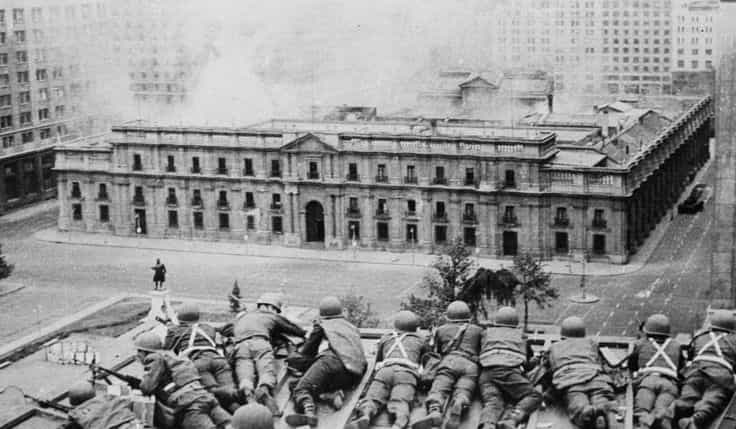

< < < Back
Why Does America Topple Socialist Regimes Abroad While Adopting Their Policies At Home? – Return Of Kings
BRICS, an economic alliance of Brazil, Russia, India, China, and South Africa, is attempting to challenge American world hegemony. This has the U.S. moving to retain its standing in the world. One of the BRICS platforms is trying to undermine the global dominance of the U.S. backed petrodollar, which would almost certainly curtail the excesses of the female-driven consumer economy. Even Saudi Arabia has joined the fight to end the dominance of the petrodollar.
Brazil, Russia, India, China, and South Africa are attempting to challenge American world hegemony
Normally, this would be terrible news. The economic havoc it could cause is frightening. However, in light of American anti-family policies like the promotion of feminism, anti-free market policies like the construction of myriad barriers to entry of business ownership through over-regulation, growing corporate monopolies, a rapidly growing police state and increasing authoritarianism in the United States, the arrival of BRICS is a development that could in some ways be a positive one for free societies. It could at least offer the world an alternative to the Cultural Marxism the U.S. has been promoting.

Cultural Marxism has steadily advanced in the U.S. over the last 50 years
To ensure its continued world dominance, the United States is once again meddling in Latin American democracies as it has done for the past 50 years. Business interests tied to Washington, D.C. and Wall Street are attempting to undermine leftist Brazilian President Rousseff by paying for protests against supposed corruption in the Rousseff administration. The pretense of American moral superiority is especially comical considering how deeply corrupt the United States government itself is.
However, showing once again how far American hands reach up the skirt of Lady Liberty around the world, Rousseff is fighting for her political life. You might be surprised to learn there is a long history of American interference in left-leaning governments in Latin America, even though the U.S. itself has become extremely left-leaning over the past 50 years.
The history of U.S. overthrowing democratically-elected governments in Latin America while supposedly “spreading democracy” throughout the world is an interesting and twisted story. Its involvement in Brazil is not without precedent.
Guatemala
Going back to the 1950s, 2% of the Guatemalan population controlled vast majority of the wealth of Guatemala and owned 70% of the land, in collusion with U.S. business interests. Once again showing how corporate and government interests have long conspired together, Secretary of State John Foster Dulles was also on the board of the United Fruit Company at the time. His brother, Alan Dulles was the head of the CIA. United Fruit Company controlled virtually all banana growing in Guatemala.

Diego Rivera’s famous mural depicting the Dulles brothers, ambassador Peurifoy, and Eisenhower’s face on a bomb greeting Castillo Armas, who seized dictatorial power in a U.S. backed coup
In 1950, Jacobo Arbenz became the first democratically elected leader of Guatemala. Arbenz campaigned on bringing a system of land reforms which would give Guatemalan citizens a chance to own land. Arbenz himself would have to give up some of his land under the program. The election of Arbenz worried U.S. corporate interests and prompted the Dulles family to send Howard Hunt, an economic hitman down to Guatemala. This is Hunt’s own testimony as to how the U.S. government manipulated the situation in Guatemala.
So they said a decision has been made at the highest levels of our government to rid Guatemala of the Arbenz regime, and we would like you to participate in it. You will be chief of propaganda and political action.
What we wanted to do was have a terror campaign, to terrify Arbenz particularly and terrify his troops, much as the German Stuka bombers terrified the populations of Holland, Belgium, and Poland at the onset of World War II.
We sewed confusion throughout the countryside, and by this time we had aircraft flying over and dropping leaflets and doing a little harmless bombing.
The “harmless bombing” along with the U.S. backed terror campaign costed thousands of Guatemalan lives.
The U.S. government isolated Guatemala militarily and diplomatically, and in creating the Red Scare it was able to use terror and social engineering strategies to safeguard corporate interests and American economic control of Guatemala. Based on the U.S. enacting socialist policies of its own over the last half-century, this was more about United Fruit retaining economic control of Guatemala than it was anything else.
It also directly contradicts the public relations story of spreading democracy throughout the world. Arbenz, a democratically elected leader who was not as far to the left as many Democrats are in America today was overthrown, stripped naked, and exiled from his country. After having successfully overthrown the democratically-elected Arbenz, Vice President Richard Nixon went down to Guatemala to congratulate the American-installed dictators in Guatemala.
Democracy is not important to the CIA
Philip Agee was a CIA agent from 1957-1988. In this interview, he tells us how much the U.S. really values democracy in Latin America and the rest of the world:
In the CIA we didn’t give a hoot about democracy. I mean it was fine if a government was elected, and would cooperate with us. But, if it didn’t, democracy didn’t mean a thing to us, and I don’t think it means a thing today. The true goal of the United States government is control…the principle of government of the people, by the people and for the people, well that’s just silly.
You have to realize the depth of what Agee is saying. If a government doesn’t value government of the people, by the people, and for the people abroad, how could it possibly value those things at home?
This attitude is obvious today since the United States government routinely ignores the wishes of its citizens as the policies of economic control first used abroad have now turned against its own citizens. It routinely passes laws which are destroying the middle class like NAFTA and more recently, TPP. It also imports large numbers of immigrants to suppress wages.
Jose Serrano, New York Congressman talks about the attitude of the United States government abroad, which uses politicians that are bought and paid for like cheap hookers by American corporations.
How dare you haven’t allowed American corporations to buy you out. How dare you continue this arrogance that says you will never succumb to us. Don’t you know who we are? Don’t you know who these corporations are? Don’t you know your life would be better if you could drink Coca-Cola every day?
Chile
A generation after the successful blueprint for overthrowing elected leaders was laid down in Guatemala, a U.S. backed coup of democratically elected leader Salvador Allende in Chile succeeded.
Granted, Allende was the first Marxist elected in the Americas so there was cause for concern. But, in a case of the pot calling the kettle black, at the same time it was toppling leftist regimes in Latin America the U.S. was adopting Cultural Marxism through the promotion of feminism. It was also using a system of fiat currency printed by central banks. Central banks are one of the ten planks of the Communist Manifesto.
Perhaps what worried the U.S. most was the Allende government attempting to extricate the economy of Chile from American corporate control. The U.S. was not going to let that plan succeed. It helped create conditions that would lead to a coup using “Track II” of CIA policy which actively looked for military leaders willing to participate in a coup.
After his Presidential Palace was attacked by British-supplied bombers in a coup started by his own armed forces, Allende shot himself. The successful coup meant fascist General Pinochet would take leadership of the country. Pinochet rounded up Allende supporters and brought them to concentration camps. He would remain dictator from 1973 until 1990. Once again, a democratically elected socialist had been overthrown. (And a couple of generations later, after Cultural Marxism which took root in the 1960s had bore fruit, a “democratic socialist” named Bernie Sanders would be running for President of the United States with wide support.).
Secretary of State Henry Kissinger denied American involvement in the coup, however CIA documents refuted his claim:
It is firm and continuing policy that Allende be overthrown by a coup.

The U.S. backed overthrow of another democratically elected government in Chile; the siege of the Presidential palace by General Pinochet’s forces
Get Used To It, World
U.S. involvement in Nicaragua, Venezuela, and other Latin American countries has seen similar techniques used. Duane Clarridge, former head of the CIA in Latin America attempts to explain this policy when asked what right the CIA has to overthrow democratically elected leaders of other nations:
Well, that’s just tough. We are going to protect ourselves, and we are going to go on protecting ourselves because we end up protecting all of you, and let’s not forget that. We will intervene whenever we decide it’s in our national security interests to intervene, and if you don’t like it, lump it. Get used to it, world.
That statement does have a certain logic to it.
However, as these accounts have shown, national security largely has nothing to do with the American policy of toppling governments. It has more to do with protecting the financial interests of corporations who have influence in the U.S. government.
It is especially interesting that the U.S. has violently opposed far-left regimes all the while it has been promoting Cultural Marxism at home; this includes the adoption of policies which have led to the breakup of the family via feminism, undermined Western traditions, attacked Christianity, and marginalized individuality in support of the socialist collective.
At best, one could say the policies the U.S. has instituted have been hypocritical, as it undermines the principles its own formerly free society was based on while attacking other governments who do the same thing. At worst, they have been part of a long-term plan as the U.S. itself continues a Long March to socialist fascism. Perhaps it didn’t want competition.
Read More: DePaul University Has Been Ruined By Cultural Marxism